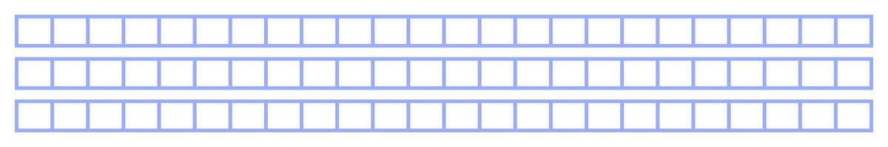
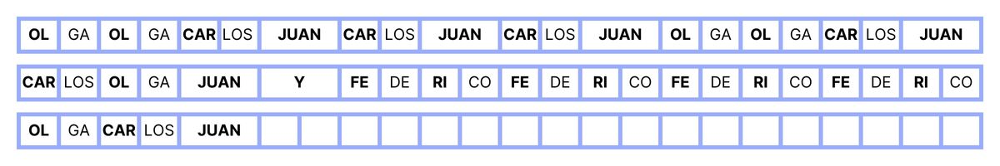
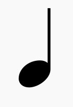

Ahora probemos los diferentes nombres del juego. Olga se compone de dos sílabas, (ol) va a coincidir con el primer sonido, osea el fuerte y (ga) va a coincidir con el segundo sonido, osea el débil.
Compruébalo.
Luego probemos lo mismo con el nombre Carlos.
Ahora haz la prueba de hacer el juego completo, prestando atención a esta nueva percepción sobre el audio del comienzo.
¿Podemos escribir un sonido?
Ahora seguimos profundizando y te proponemos llevar el sonido al papel.
Vamos a representar el juego con el código escrito, osea buscar formas visuales que nos ayuden a entender como funciona la música cuando la escribimos.
Existen muchas formas de escribir un sonido y por eso le llamamos código no tradicional, ya que nos permiten inventar como queremos hacerlo.
Más adelante veremos que existe un código musical específico, pero ahora realizamos un paso intermedio.
Te invitamos a crear una cuadrícula similar a esta en un papel y escribir el juego musical "Olga, Carlos, Juan" colocando las sílabas y palabras en cada rectángulo.
Debes tener especial atención a las duraciones de cada sílaba y considerar que cada rectángulo pequeño corresponde a un sonido del ejemplo auditivo anterior.

Ahora realizaremos otra prueba del juego musical pero sobre un sonido constante que contiene solo el primer sonido (fuerte) y no el segundo sonido (débil) como en el ejemplo anterior.
Prueba de hacer el juego sobre este sonido.
Como habrás podido comprobar, hay sílabas que coinciden con el sonido y sílabas que no coinciden.
Así comprendemos que ese sonido nos sirve de guía y nos ordena la secuencia del juego. Es nuestra referencia.
Te presentamos el siguiente audio donde el sonido constante es más rápido. Realiza el juego sobre este sonido.
Lo que ocurrió en esta prueba comúnmente nos pasa cuando cantamos el famoso "Feliz cumpleaños".
Lo que hacemos con las palmas es lo mismo que ocurre con el sonido constante del audio. Hay cumpleaños que son muy divertidos y a la hora de cantar lo hacemos muy rápido pero siempre acompañamos con palmas de acuerdo a la velocidad con la que interpretamos la canción. Pero también pasa que en algunos cumpleaños estamos muy cansados y medios aburridos. En esta ocasión cantamos lento y las palmas son también lentas acompañando la música.
Escucha las diferentes velocidades y comprueba como acompañarías con las palmas.
Este tiempo que organiza la música que interpretamos le llamamos pulso. Al igual que nuestro pulso vital (latidos del corazón) este puede cambiar y nos marca diferentes velocidades. Lo podemos medir de diferentes formas como por ejemplo cantidad de pulsaciones por minuto (al igual que el latido del corazón). En música existe una dispositivo llamado metrónomo que nos permite marcar las diferentes velocidades (pulsación continua) en que voy a interpretar una música.
En el siguiente link podrás comprobar cómo funciona el metrónomo e interpretar el juego musical sobre diferentes pulsos (velocidades).
Así vamos entendiendo como funcionan las estructuras musicales, de acuerdo a una referencia (pulso).
Pero, ¿qué pasa cuando hay algunos pulsos o sonidos que suenan más fuertes que otros?
Estos pulsos o sonidos los llamamos acentos, son muy importantes y hay que prestarle especial atención. En muchos casos nos ayudan a organizar la música un poco más.
Volvamos a hacer el juego musical, ahora pensando en los acentos. Te presentamos la cuadrícula que sigue con los acentos marcados con negrita y los demás sonidos con letra normal.

El código musical
Ahora vamos a ver como funciona la escritura musical tradicional luego de haber experimentado y probado con algunos códigos no tradicionales.
Existen en el código musical (7 figuras musicales) que representan las duraciones relativas de los sonidos.
Vamos a entenderlo visual y sonoramente.
Comenzamos con la palabra JUAN como pulso (unidad) y proponemos la siguiente secuencia:
En el sistema musical existen diferentes símbolos para las diferentes duraciones de los sonidos.
En este caso, nuestra unidad tendrá el símbolo de la figura musical llamada "negra":

Así, la palabra JUAN la asociamos a este símbolo (figura musical), que en este caso corresponde a nuestro pulso y visualmente lo podemos expresar de la siguiente manera escrito sobre una línea recta.
Escuchemos como suena:
¿Conoces otras palabras que puedan entrar en un pulso?, ¿y otros sonidos?
Te invitamos a escuchar nuevamente un pulso constante para que puedas cantar o tocar sobre él diferentes palabras o sonidos.
En las siguientes pestañas seguimos viendo como es escriben otras duraciones de los sonidos en el código musical.